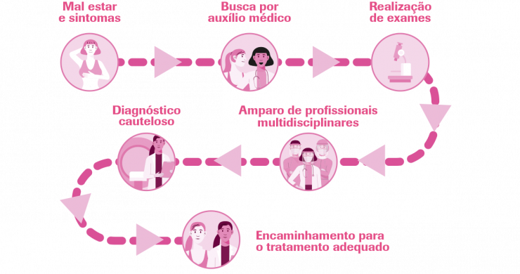

Você sabe o que fazer?
A prevenção do câncer de mama é uma parte essencial da saúde da mulher. Conhecimento e ação são poderosos aliados na luta contra essa doença. Com práticas simples, como o autoexame das mamas e exames de rastreamento regulares, é possível detectar precocemente qualquer alteração e aumentar as chances de tratamento bem-sucedido.
Além disso, adotar um estilo de vida saudável, incluindo uma dieta equilibrada, exercícios físicos regulares e evitar o tabagismo e o consumo excessivo de álcool, pode reduzir significativamente o risco de desenvolver câncer de mama.
Portanto, não espere até que seja tarde demais. Tome medidas hoje mesmo para cuidar da sua saúde e prevenir o câncer de mama. Lembre-se, seu bem-estar está em suas mãos.
